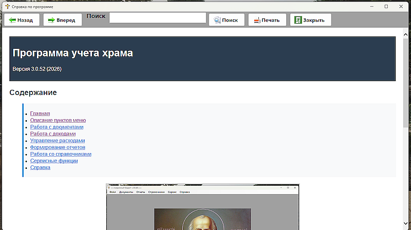
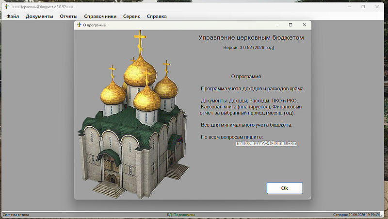

Справка |
|
СправкаПункты меню 'Справка' содержат: Подпункт меню 'Справка по программе' - данное руководство. Реализовано в HTML и PDF форматах  Рис. 1 - окно формы справки. Подпункт меню 'О программе' содержит краткие сведениия о программе, ее основные функции, версию, контакты разработчика.  Рис. 2 - окно О программе. | |
По вопросам: viruss954@gmail.com